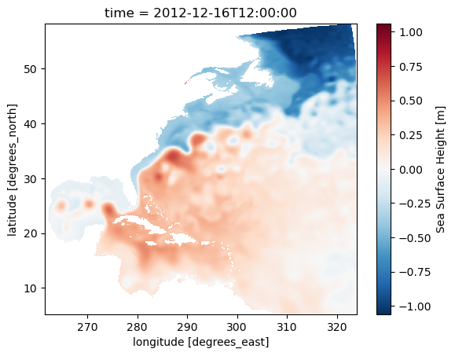

On this page, we will explore the process of extracting a subset of model simualtion data produce from the regional MOM6 model. The model output is to support the Climate Ecosystem and Fishery Initiative. We will showcase how to utilize OPeNDAP for accessing the data and visualize it on an interactive map. The currently available data can be viewed here. The contents of this folder encompass historical simulations derived from the regional MOM6 model spanning the years 1993 to 2019.
Import python packages
Thanks to the netCDF4/Pydap library, accessing data through OPeNDAP directly from Xarray is made seamless. For detailed usage guidance, the Xarray documentation offers excellent examples and explanations. Ex: if the OPeNDAP server require authentication, backends.PydapDataStore can help on storing the login data.
import xarray as xr
Access data (regular grid product)
From the previous page explaining OPeNDAP interface, we know that the OPeNDAP URL can be obtained from the form. In our case, we will get the URL from this form
Derived and written at NOAA Physical Science Laboratory
NCO :
netCDF Operators version 5.0.1 (Homepage = http://nco.sf.net, Code = http://github.com/nco/nco)
contact :
chia-wei.hsu@noaa.gov
dataset :
regional mom6 regrid
_NCProperties :
version=2,netcdf=4.9.2,hdf5=1.14.3
Tip
When we use xr.open_dataset() to load the data from OPeNDAP, we actually only load the metadata and coordinates information. This provide a great way to peek at the data’s dimension and availability on our local machine in the xarray object format. The actual gridded data values at each grid point will only be downloaded from the PSL server when we add .load() to the dataset.
Since most OPeNDAP server will set a single time data transfer limit (PSL server has a 500MB limit), we cannot ds_ssh.load() the whole dataset. However, we can load the sea level map at a single time step which is smaller than 500MB.
ds_ssh_subset = ds_ssh.sel(time='2012-12').load()
ds_ssh_subset
<xarray.Dataset> Size: 3MB
Dimensions: (lon: 774, lat: 844, time: 1)
Coordinates:
* lon (lon) float64 6kB 261.6 261.6 261.7 261.8 ... 323.8 323.8 323.9
* lat (lat) float64 7kB 5.273 5.335 5.398 5.461 ... 58.04 58.1 58.16
* time (time) datetime64[ns] 8B 2012-12-16T12:00:00
Data variables:
ssh (time, lat, lon) float32 3MB nan nan nan nan ... nan nan nan nan
Attributes:
NumFilesInSet: 1
title: NWA12_COBALT_2023_04_kpo4-coastatten-physics
associated_files: areacello: 19930101.ocean_static.nc
grid_type: regular
grid_tile: N/A
external_variables: areacello
history: Derived and written at NOAA Physical Science Laboratory
NCO: netCDF Operators version 5.0.1 (Homepage = http://nc...
contact: chia-wei.hsu@noaa.gov
dataset: regional mom6 regrid
_NCProperties: version=2,netcdf=4.9.2,hdf5=1.14.3
Derived and written at NOAA Physical Science Laboratory
NCO :
netCDF Operators version 5.0.1 (Homepage = http://nco.sf.net, Code = http://github.com/nco/nco)
contact :
chia-wei.hsu@noaa.gov
dataset :
regional mom6 regrid
_NCProperties :
version=2,netcdf=4.9.2,hdf5=1.14.3
From the xarray dataset object output above, we will notice the ssh value in ds_ssh_subset is now avaible and printed out while the ssh value in ds_ssh is not. This means the ssh values has been downloaded from the OPeNDAP server to the local machine memory.
Quick view of the variable
To check if the data makes sense and fits the chosen time and region, you can use Xarray’s .plot() method. This way, you see a graph instead of just numbers, making it easier to understand.
ds_ssh_subset.ssh.plot()

Science info
The map illustrates a clear distinction between high sea levels, primarily from tropical regions (hot and fresh water), and low sea levels, mainly from the Labrador Sea or other polar areas (cold and salty sea water). The meandering pattern of the sharp sea level gradient, indicating rapid sea level changes over a short distance, highlights the location of the Gulf Stream. This distinctive sea level feature is a result of the existence of western boundary currents, commonly observed on the western edges of major ocean basins, such as the Kuroshio in the Pacific basin.
Plotting the data on a interactive leaflet map
In this section, there are more detail figure manipulation to produce the map shown above and be able to zoom in and out from a interactive map. This is not neccessary for data downloading and preprocessing. However, this shows how the map on the CEFI portal is generated.
Load package for the interactive map
matplotlib to generate the color shaded map above
folium the python interface of generating a leaflet interactive map
branca the colorbar module included when installing folium package
import matplotlib.pyplot as pltimport foliumimport branca.colormap as cm
Specify figure setup
# figure settingcolormap_name ='RdBu_r'# colormap name in matplotlib colormap blue to redn_increments =20# number of increment in the colormapvarmin =-1# minimum value on the colorbarvarmax =1# maximum value on the colorbarvarname ='Sea Surface Height'# legend show on mapda_regrid_data = ds_ssh_subset['ssh'] # Xarray DataArray object used to plot the map
Create RGBA code for each grid point
This part use the matplotlib to create a special map (2D) which assigns a RGBA code (an array of four number) for each grid point. This will create a array with the size of [nlon,nlat,4].
# setup the colormap from matplotlibpicked_cm = plt.get_cmap(colormap_name, n_increments)# normalized data (0,1) for colormap to applied on normed_data = (da_regrid_data - varmin) / (varmax - varmin)colored_data = picked_cm(normed_data.data[0,:,:])
folium.raster_layers.ImageOverlay( image=colored_data, bounds=[[float(da_regrid_data.lat.min().data),float(da_regrid_data.lon.min().data)], [float(da_regrid_data.lat.max().data),float(da_regrid_data.lon.max().data)]], mercator_project=True, # applied data to web mercator projection (essential) origin="lower", # plot data from lower bound (essential) opacity=1, zindex=1).add_to(fm)
<folium.raster_layers.ImageOverlay at 0x7f44dc05cb50>
Create the colorbar for the interactive map
import numpy as nptick_inc = np.abs(varmax-varmin)/10.# start constructing the branca colormap to put on folium mapindex_list =range(0,n_increments) cmap_list = picked_cm(range(n_increments)).tolist()cmap_foliump = cm.LinearColormap( colors=cmap_list, vmin=varmin, vmax=varmax, caption='fcmap', max_labels=n_increments+1, tick_labels=list(np.arange(varmin,varmax+tick_inc*0.000001,tick_inc))).to_step(n_increments)# Add the colormap to the folium mapcmap_foliump.caption = varnamecmap_foliump.add_to(fm)
fm
Make this Notebook Trusted to load map: File -> Trust Notebook
Access data (raw grid product)
The raw grid product differs from the regular grid in that it represents the original output of the model. The model grid uses the Arakawa C grid. The MOM6 documentation provides an excellent visualization of the Arakawa C grid. We can concentrate on the h point, which is where scalar values like sea level height are stored. The grid does not have uniform spacing and is, in fact, a curvilinear grid.
Info
The raw model output is beneficial when calculating the energy budget, which includes factors like heat and momentum. This output preserves each term’s original values, avoiding any potential distortions caused by interpolation. By using the raw grid product, we can ensure the energy budget balances within a closed system.
To use the raw grid data, one need to get two files. 1. the variable file 2. the static file
netCDF Operators version 5.0.1 (Homepage = http://nco.sf.net, Code = http://github.com/nco/nco)
DODS_EXTRA.Unlimited_Dimension :
time
Tip
Again, only the metadata and coordinate information are loaded into local memory, not the actual data. The gridded data values at each grid point are only downloaded from the PSL server when we append .load() to the dataset.
Warning
In the ds_static dataset, you can observe the one-dimensional xh, yh grid. The numbers on this grid may resemble longitude and latitude values, but they do not represent actual geographical locations. For accurate longitude and latitude data, you should refer to the geolon, geolat variables in the list. These variables, which are dimensioned by xh, yh, provide the correct geographical coordinates.
Now let’s take a look at the grid area distribution which give a great sense of how it is different from regular spacing grid
We can see that the most significant differences between the two maps are located in the higher latitudes. Since the grid information is important in the raw grid, the easiest way to merge the two dataset so we can have the accurate lon lat that follows the data that we are going to work on.
ds_ssh_subset = ds_ssh.sel(time='2012-12').load()ds = xr.merge([ds_ssh_subset,ds_static])ds = ds.isel(time=slice(1,None)) # exclude the 1980 empty field due to merge
netCDF Operators version 5.0.1 (Homepage = http://nco.sf.net, Code = http://github.com/nco/nco)
_NCProperties :
version=2,netcdf=4.9.0,hdf5=1.12.2
DODS_EXTRA.Unlimited_Dimension :
time
From the xarray dataset object output above, we will notice the ssh value in ds is now avaible and the coordinate information in teh coordinate is also include into a single Dataset object.
Quick view of the variable
To check if the data makes sense and fits the chosen time and region, you can use Xarray’s .plot() method. This way, you see a graph instead of just numbers, making it easier to understand.